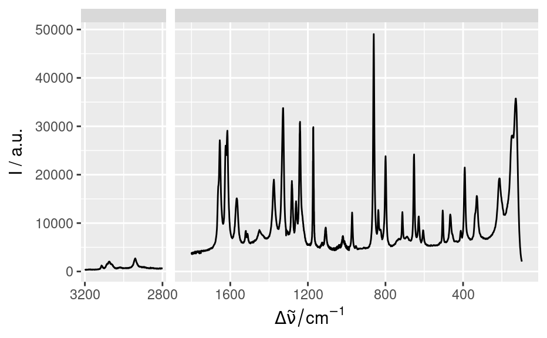
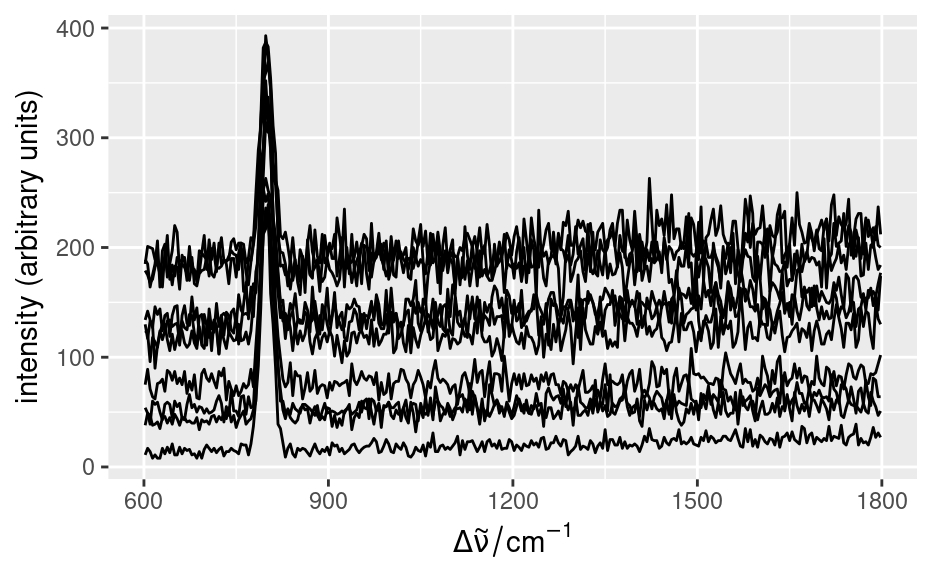
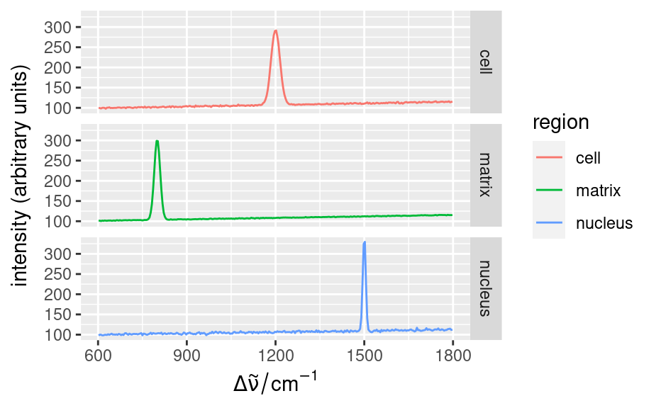

This function plots spectroscopic line plot by using ggplot2.
By default, only a few spectra are plotted (see argument spc.nmax).
Note: The function is still experimental and may change in the future.
qplotspc( x, wl.range = TRUE, ..., mapping = aes_string(x = ".wavelength", y = "spc", group = ".rownames"), spc.nmax = hy_get_option("ggplot.spc.nmax"), map.lineonly = FALSE, debuglevel = hy_get_option("debuglevel") )
Arguments
| x | A |
|---|---|
| wl.range | Wavelength ranges to plot. |
| ... | Further arguments handed to |
| mapping | see |
| spc.nmax | (integer) Maximum number of spectra to plot. |
| map.lineonly | If |
| debuglevel | ( |
Value
A ggplot2::ggplot() object.
See also
Author
Claudia Beleites
Examples
qplotspc(flu)qplotspc(paracetamol, c(2800 ~ max, min ~ 1800)) + scale_x_reverse(breaks = seq(0, 3200, 400)) #> Error in grid.Call(C_textBounds, as.graphicsAnnot(x$label), x$x, x$y, resolveHJust(x$just, x$hjust), resolveVJust(x$just, x$vjust), x$rot, 0): polygon edge not found set.seed(1) faux_cell <- generate_faux_cell() qplotspc(faux_cell)  qplotspc( aggregate(faux_cell, faux_cell$region, mean), mapping = aes(x = .wavelength, y = spc, colour = region) ) + facet_grid(region ~ .)  qplotspc( aggregate(faux_cell, faux_cell$region, mean_pm_sd), mapping = aes(x = .wavelength, y = spc, colour = region, group = .rownames) ) + facet_grid(region ~ .) 